ספורט. חוגים. קהילה.
מקום אחד לכל מה שטוב.
דרך ההגנה 135, דרום-מזרח תל אביב.
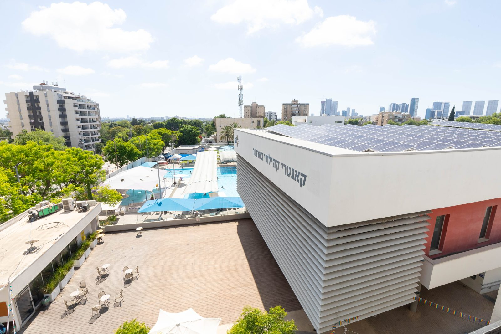
קהילה בפעולה. לאן נכנסים?
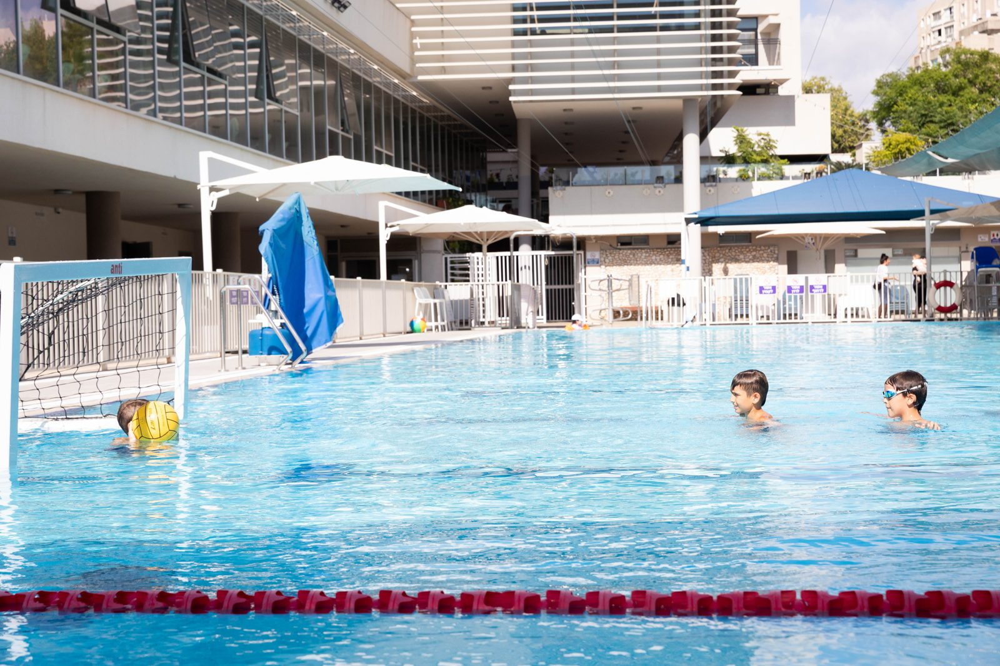
הבריכה
מקורה כל השנה. פתוחה לשמיים בקיץ.
בריכה מקורה חצי אולימפית לכל השנה, בריכת קיץ עם כניסה חדשה, בריכות פעוטות וסאונות.
פרטים ושעות במזכירות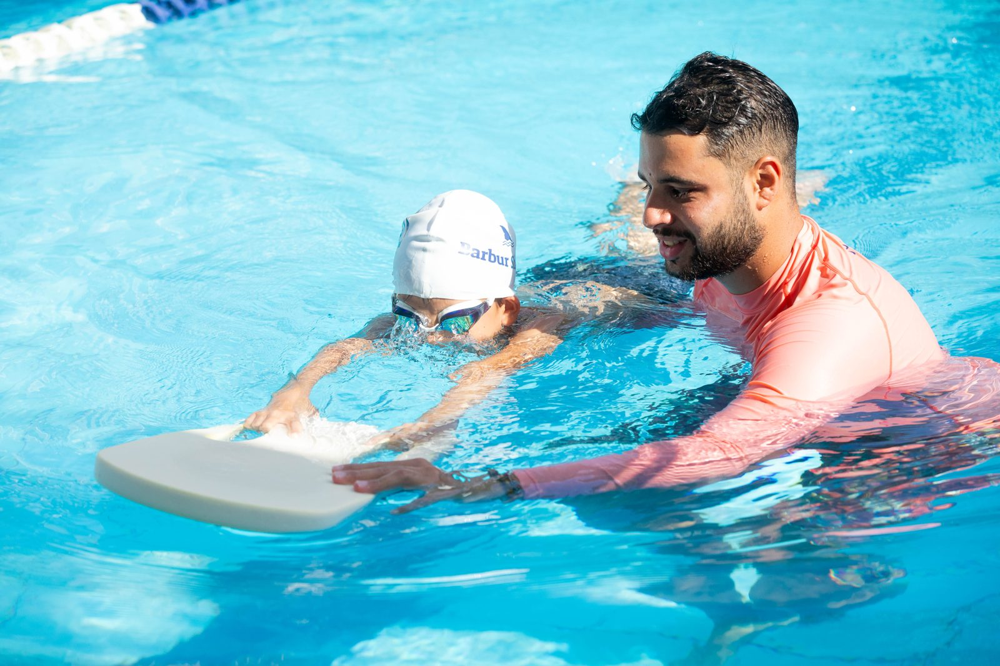
האקדמיה לשחייה
מהסתגלות למים ועד מסלול תחרותי.
מהפעם הראשונה במים ועד שחייה הישגית, שחייה אמנותית וכדורמים, עם מדריכים שנמצאים איתכם בבריכה.
הסתגלות למים · מתחילים · מתקדמים · שיפור סגנון · מסלול תחרותי עם מכבי תל אביב · שחייה לבוגרים · שחייה אמנותית
הרשמה לבית הספר למקצועות המים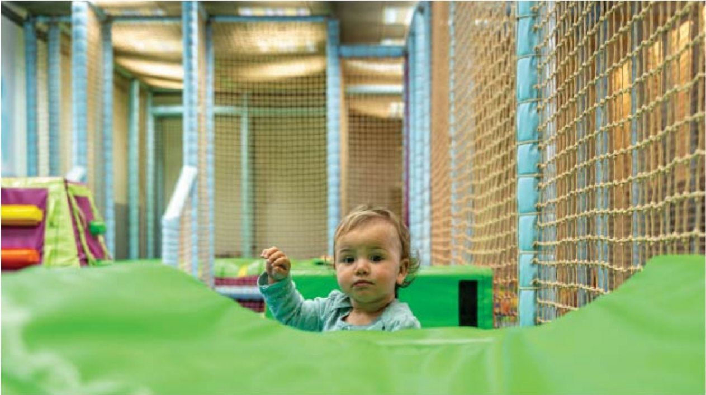
מרכז הגיל הרך
שבת של כיף מתחילה בג'ימבורי.
ג'ימבורי, שעות סיפור וחוגים ראשונים, לקטנים ולהורים שלהם.
ג'ימבורי · תנועה לגיל הרך · שפת הקשב · כרטיס כניסה 15 ₪, כרטיסייה של 10 כניסות 100 ₪
הרשמה לחוגי גיל הרך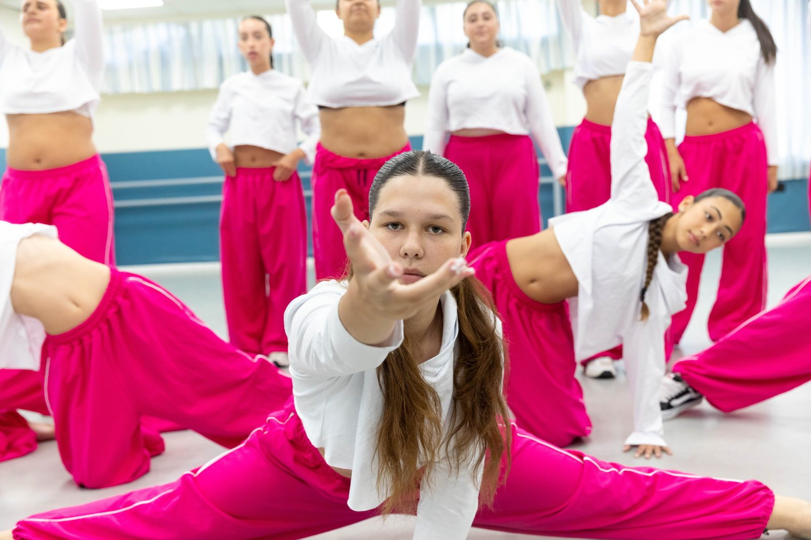
האקדמיה למחול
מצוינות ויצירה מתוך הקהילה.
חוגים ולהקות, מהסטודיו אל התחרויות ואל הבמה.
טרום בלט · בלט קלאסי · מחול יצירתי · ג'אז והיפ הופ · ריקודים סלוניים · להקות המחול
הרשמה לחוגי מחול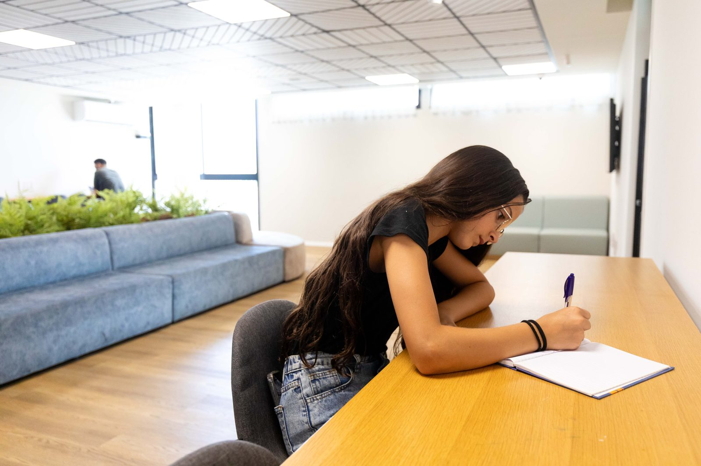
מרכז הנוער
פתוח כל יום אחרי בית הספר.
מקום להיפגש, ליזום וליצור, פתוח בימים א' עד ה', 16:30 עד 20:30.
חדר מוזיקה · כדורגל · מסיבות וערבי נוער · טיולים וסמינרים · קורסי מד"צים · פלייסטיישן ומטבח פתוחים לכולם
פרטים במזכירות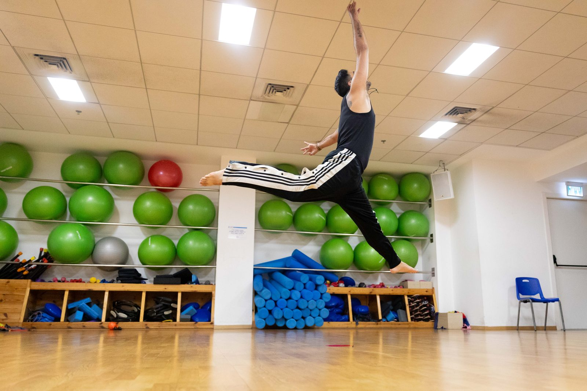
מרכז הספורט
מקט-רגל ועד ג'יו ג'יטסו.
חדר כושר, מתחם פונקציונלי, פילאטיס מכשירים, אולם ספורט וחוגים לילדים ולמבוגרים.
כדורסל · קט-רגל · קראטה · ג'ודו · קפוארה · ג'יו ג'יטסו · אגרוף · התעמלות אומנותית · פונקציונלי · פילאטיס מכשירים
הרשמה לחוגי ספורט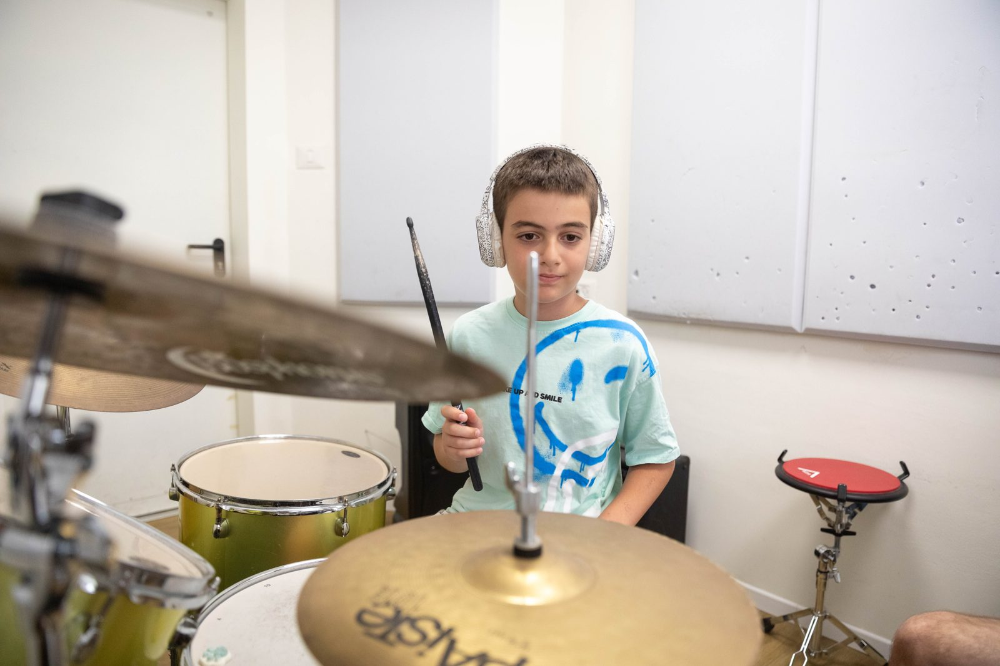
הקונסרבטוריון
מפסנתר ועד סקסופון, מהגיל הרך ועד מבוגרים.
לימודי נגינה, הרכבים וקונצרטים, במרכז המוזיקה של השכונה.
פסנתר · גיטרה · תופים · כינור · צ'לו · קלרינט · סקסופון · חליל · חצוצרה · פיתוח קול · מקהלה · הרכבים ואנסמבלים
הרשמה לקונסרבטוריון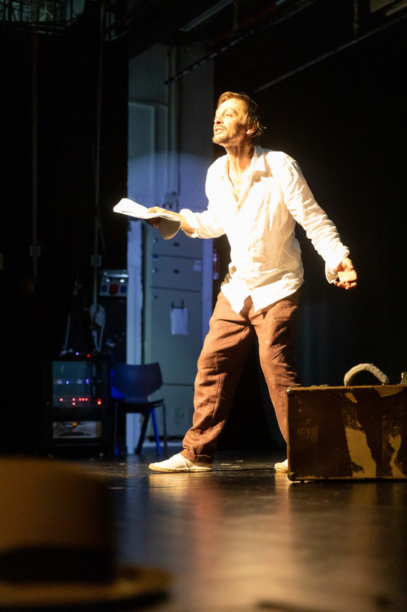
מרכז התרבות
קהילה יוצרת תרבות יוצרת קהילה.
אודיטוריום ואולם מופעים. הצגות אורחות, מיקרוסינמה, ותיאטרון בארבור שיוצר כאן, מתוך השכונה.
חוגי תיאטרון · תיאטרון נוער בשיתוף הסטודיו של יורם לוינשטיין · תיאטרון נשים בקהילה · מיקרוסינמה · המקהלה הקהילתית
לוח המופעים והכרטיסים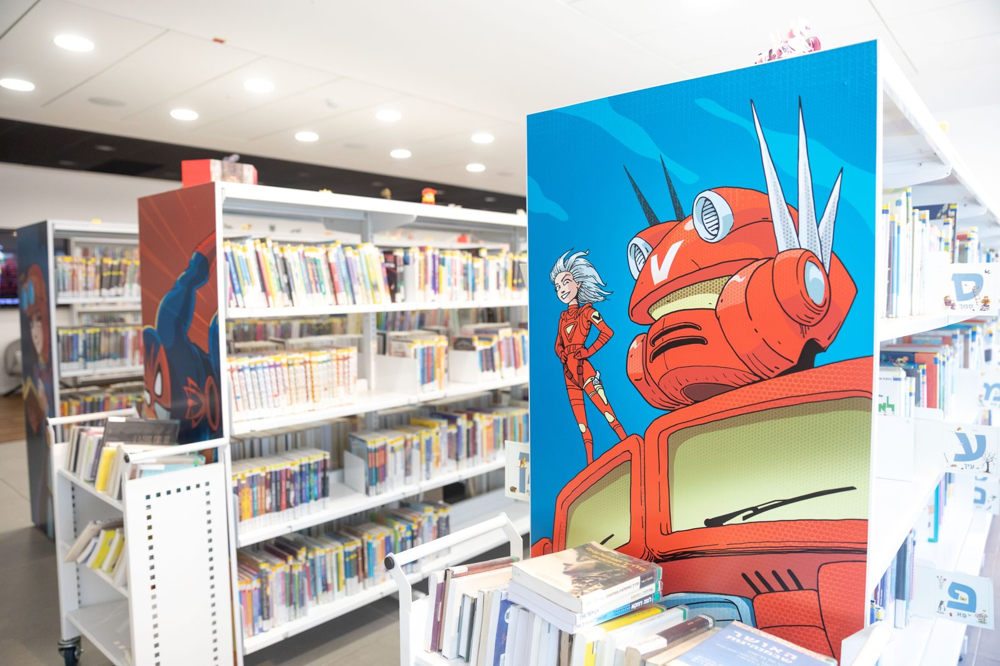
הספרייה
ספרים, סדנאות ושעות סיפור.
ספרים להשאלה, סדנאות קומיקס ויצירה, מתחם מייקטק ושעות סיפור.
ימים א', ב', ד', ה' 14:45–19:00 · יום ג' 09:00–13:00 · טלפון הספרייה 073-3844222
שעות הספרייה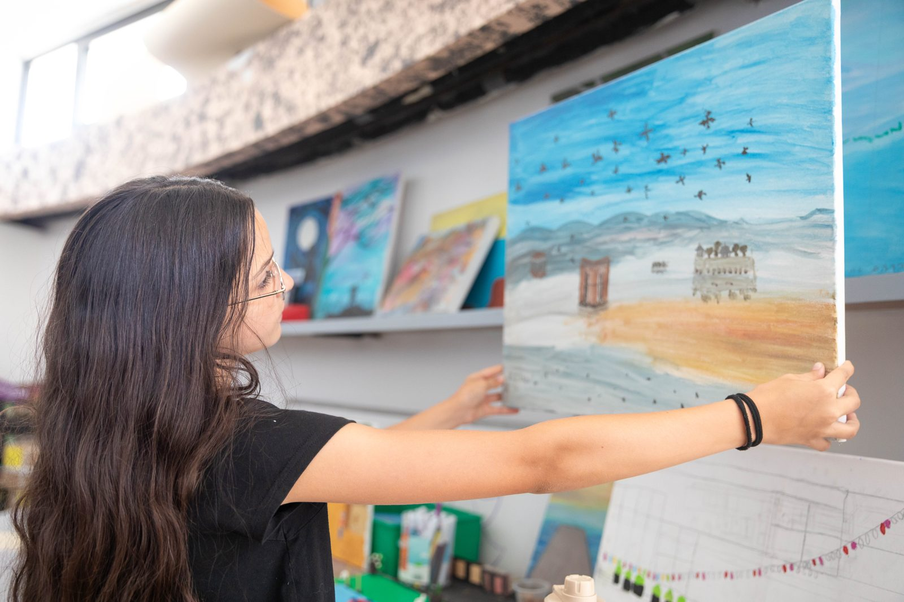
חוגי העשרה
מאנגלית ועד כלבנות.
חוגים לילדים אחרי בית הספר, ללמוד ולגלות משהו חדש.
אנגלית · הייטקיסט · כלבנות · שחמט · ציור · יצירה ומדע · הכנה לכיתה א'
הרשמה לחוגי העשרה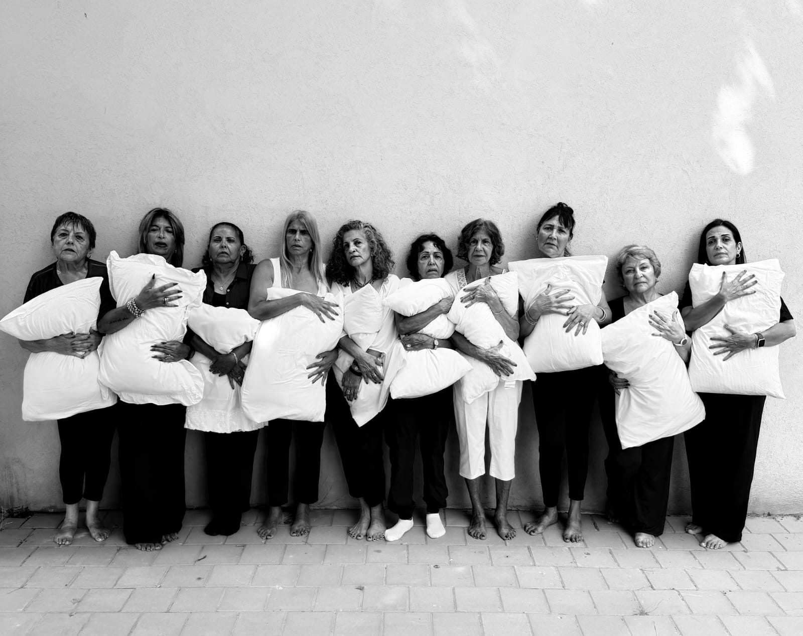
קבוצות בקהילה
הקהילה שנפגשת בבית.
קבוצות של תושבים ותושבות שיוצרות, שרות ונפגשות בבארבור.
תיאטרון נשים · המקהלה הקהילתית · מועדון דוברי רוסית, מעל 500 חברים · מועדון מיקרוסינמה · קמי"ה · עמיתים
איך מצטרפים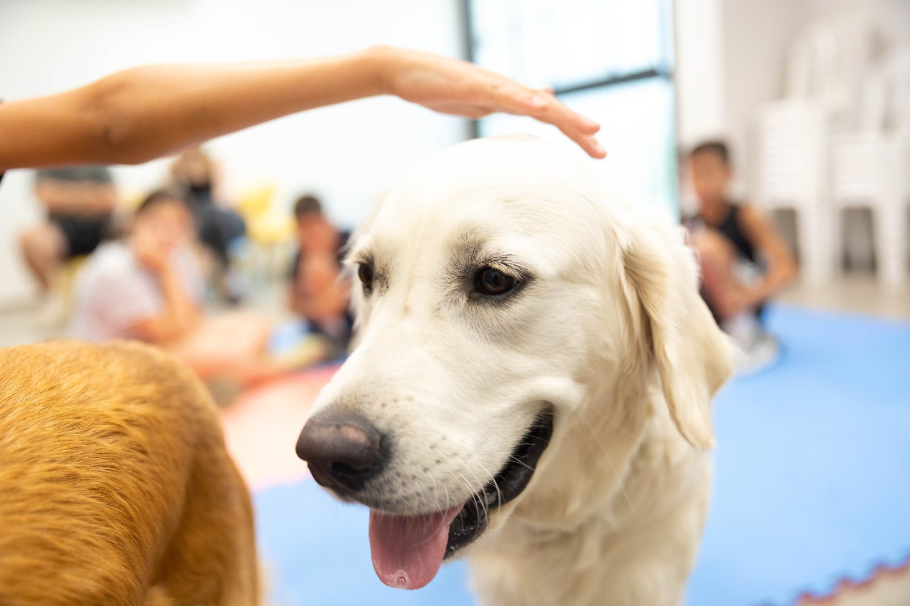
ביחד בבארבור
חוגים לילדים עם מוגבלויות.
חוגים שנבנו כדי שכל ילד וילדה ימצאו כאן מקום.
קפוארה · כלבנות · ביחד במים
פרטים במזכירות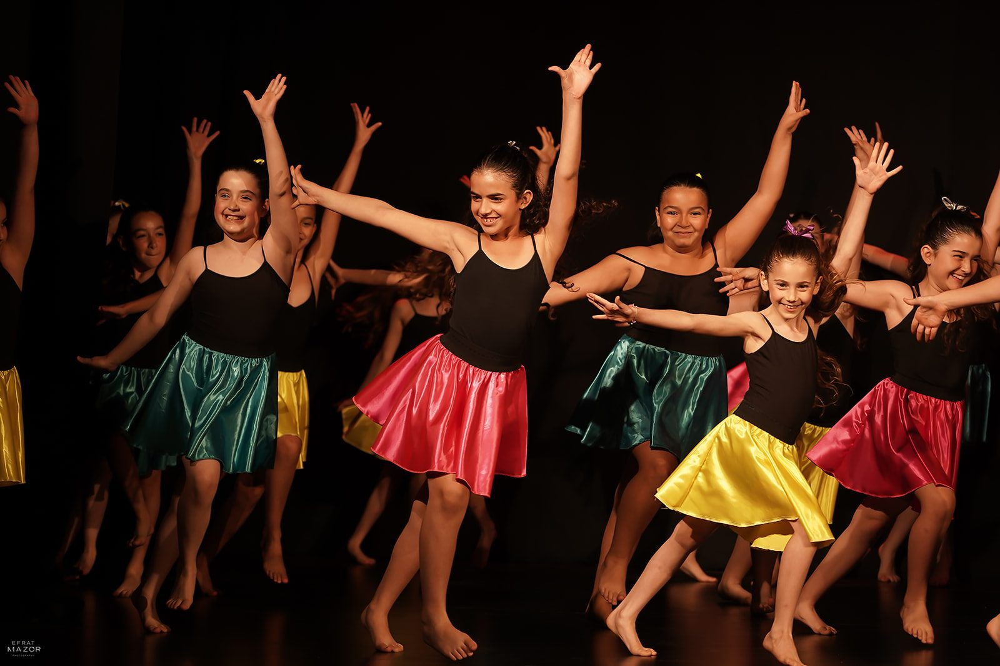
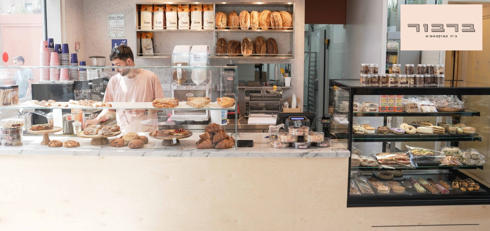
קפה ברבור
קפה ומאפים ברחבת הדק.
לפני החוג, אחריו או במקומו.
שעות פעילות
ג'ימבורי
- א' ו-ד' בבוקר
- 09:00–12:00
- שבת בבוקר
- 09:00–13:00
- א'–ה' אחר הצהריים
- 16:00–18:30
מרכז הנוער
- ימים א'–ה'
- 16:30–20:30
הספרייה
- א', ב', ד', ה'
- 14:45–19:00
- יום ג'
- 09:00–13:00
טלפון הספרייה: 073-3844222